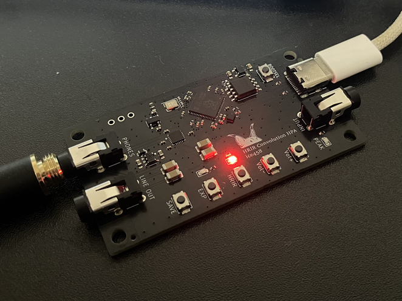
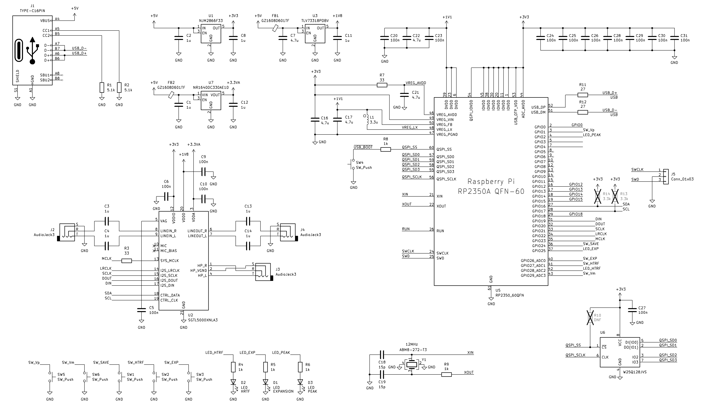
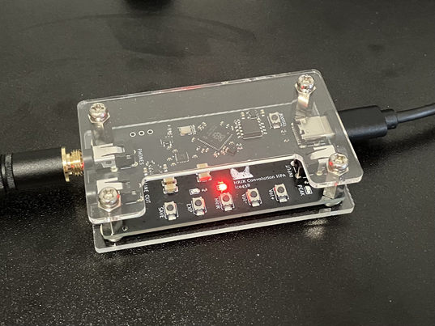

HRIR (頭部インパルス応答) の畳み込みによって、ヘッドホン再生でも音像を頭の外へ出す「頭外定位」を狙ったヘッドホンアンプ兼USB DACを作りました。RP2350 と SGTL5000 を使い、4経路 256タップの FIR 畳み込みに加え、方向別の反射処理や late reverb、APF によるデコリレーション処理までを 48kHz のまま実時間で処理しています。

完成した HRTF ヘッドホンアンプ
製作の背景
ヘッドホンで音楽を聴くと、音像が頭の中や耳のすぐ近くに貼りついたように聞こえます。これを「頭内定位」と呼びます。これが独特の聞き疲れや閉塞感を生みます。スピーカーで聴いたときのように、音像が前方の空間に広がって聞こえるのが「頭外定位」です。一般的なヘッドホン再生で頭内定位になってしまうのは、左右のレベル差しか情報が無く、本来耳に到達するはずの頭部や耳介での反射・回折による周波数特性の変化や、左右耳への到達時間差が失われているためです。
この失われている情報を数値化したものが HRTF (頭部伝達関数) およびその時間領域での表現である HRIR で、オープンデータとして多くの HRIR データベース (本機では SADIE II を採用) が公開されています。本機はこれをヘッドホン信号に畳み込むことで、ヘッドホン再生でもスピーカー再生のような頭外定位感を目指したものです。単に畳み込むだけでなく、前後の初期反射や拡散音場を付加することで、より自然な空間感を得られる機能もあります。
仕様
- マイコン: Raspberry Pi Pico 2 (RP2350)
- コーデック: SGTL5000 (I2S マスター, 48kHz / 24bit)
- USB Audio: UAC2.0 Full-Speed, 48kHz / 16bit / 2ch
- HRIR データ: SADIE II データベース (±45°、 仰角0°、全被験者)
- 主畳み込み: 4経路 × 256タップ FIR (L→L, L→R, R→L, R→R)
- 方向別反射: 7方向 × 24タップ FIR + 8～42ms の遅延線
- 残響: 6 本の遅延線による late reverb
- 内部演算: Q15 固定小数点 (中間値 32bit / 積和 64bit)
- 動作クロック: SYSCLK 252MHz (OC)
- 電源: USB 5V
頭外定位の原理
仮想的にスピーカーを自身の左右前方 ±45° に設置した状況を再現します。このとき、左スピーカーから出た音は左耳だけでなく右耳にも回り込んで到達し、右スピーカーから出た音も同様です。したがって、耳に届く信号は次のクロスフィードを含んだ 2×2 の畳み込みで表現できます。
$$ \begin{pmatrix} y_L \\ y_R \end{pmatrix} = \begin{pmatrix} h_{LL} & h_{RL} \\ h_{LR} & h_{RR} \end{pmatrix} \ast \begin{pmatrix} x_L \\ x_R \end{pmatrix} $$
\(h_{LL}\) は左スピーカーから左耳、\(h_{LR}\) は左スピーカーから右耳に到達する HRIR です。右側も同様で、合計 4 経路を畳み込むことで、左右耳に届く音が「前方に置かれたスピーカーから届いた音」に近づきます。頭の形状や耳介は人によって異なるため、HRIR の切り替えで複数の被験者のデータを比較できるようにしました。
ハードウェア
ヘッドホン出力とライン入力、USB 入力を持ち、マイコンは Raspberry Pi Pico 2 を使用しています。コーデックには入出力を一体で賄える SGTL5000 を使い、こちらを I2S マスターとして 48kHz / 24bit で動作させ、Pico 側は PIO で I2S スレーブとして受け取る構成にしました。MCLK は SGTL5000 が要求する 12MHz を、SYSCLK 252MHz から PWM による整数分周 (252 / 21) で生成しています。オーバークロックは分周が整数比になる点と、DSP 処理に十分なサイクル余裕を確保するために必要でした。

回路図
操作系は HRIR 切替、EXP (音場拡張) の ON/OFF、音量、状態保存の計 5 ボタンと、現在のモードを示す LED 3 個 (HRIR / EXP / PEAK) を備えています。状態の保存/復元はフラッシュの最終セクタにチェックサム付きで書き込みます。書き込み時は Core1 を停止し、DMA と PIO を完全に止めてから実行することで、オーディオ処理と安全に両立させています。
信号処理
DSP は Core1 で動作させ、Core0 は USB やボタン、LED といった UI 処理に専念させる構成としました。DMA のダブルバッファ (1 バッファあたり 128 フレーム ≒ 2.67ms) が完了するたびに割り込みが入り、その中で 1 ブロック分の処理を行います。1 サンプルあたりの処理経路は以下の通りです。
I2S入力 or USB入力(s24相当)
→ M/S 変換 (EXP ON 時は Side を 1.625x, 通常 1.25x)
→ 4経路主 FIR (256tap × 4: h_LL / h_LR / h_RL / h_RR)
→ direct 出力
→ [EXP ON 時のみ]
Side履歴
→ 方向別反射 FIR (7 方向 × 24tap)
→ 方向別遅延線 (8/8/17/17/28/28/42ms)
→ early 反射合成
reverb 励振 (反射差分 + early 差分)
→ late reverb (6 本の遅延線)
direct + early + late
→ Mid/Side 化
→ Side に APF デコリレーション (3段/耳)
→ dry/wet 合成
→ ヘッドルーム & ピークリミット
→ volume (ホスト音量 × ボタン音量の Q15 合成ゲイン)
→ I2S 出力 (s24)主畳み込み (頭外定位生成)
主畳み込みは 1 サンプルあたり 256 タップを 4 経路、計 1024 回の積和演算を要する処理で、48kHz では毎秒約 4900 万回の MAC となります。RP2350 の Cortex-M33 には DSP 拡張命令があり、符号付き 16bit × 2 を 64bit アキュムレータへ 1 サイクルで積和する SMLALD を利用できます。これに合わせて HRIR 係数を Q15 化し、履歴バッファは折り返しを避けるために 2 倍長で確保して前方向連続アクセスができるようにしました。加えて、4 経路はヒストリを共有するためインタリーブで同時計算することでヒストリの再読み出しを減らしています。この関数は __not_in_flash_func 指定で SRAM に配置し、XIP によるキャッシュ外し時の急激なレイテンシ悪化を防いでいます。
音場拡張 (EXP)
主畳み込みだけでも定位の手がかりは得られますが、ヘッドホン特有の閉塞感はどうしても残ります。そこで EXP モードでは以下の処理を追加し、空間としての広がりを強調しています。
- Side 強調: M/S 行列の Side 成分を 1.625 倍することで、横方向のエネルギーを増やします。
- 方向別反射 FIR: 75°/110°/135°/180°/225°/250°/285° の 7 方向について、各 24 タップの HRIR を別途生成しておき、Side 信号を方向ごとの短い FIR に通します。
- 方向別遅延: 各方向に 8 / 8 / 17 / 17 / 28 / 28 / 42 ms の遅延を与えて合成し、反射音の到達時間差を模倣します。
- late reverb: 反射成分と early 成分の差分を励振として与え、6 本の遅延線でフィードバック残響を生成します。
- APF デコリレーション: Mid/Side に分解した Side 成分を、1 耳あたり 3 段の全域通過フィルタに通し、左右の位相相関を下げて包囲感を増加させます。
EXP は定位そのものを作る処理ではなく、既に作られた頭外定位感の周りに空間感を加える補助的な位置づけです。定位感だけが欲しい場合は EXP を OFF にできるようにしています。
HRIR 係数の ROM 化
SADIE II は被験者ごとに大量の HRIR WAV を持つデータベースで、全方向を実機に載せるのは現実的ではありません。そこで、オフラインの Python スクリプトで必要な方向 (±45°, EL=0°) に最も近い WAV を選び、Q15 量子化して C ヘッダとして書き出しています。方向別反射用の 7 方向分についても同じスクリプトで抽出し、全方向をまとめて目標ピーク 0.22 に正規化してから格納しています。
USB Audio の実装
USB 側は TinyUSB を使って UAC2.0 Speaker + CDC の複合デバイスとして実装しています。CDC は起動ログや内部状態 (モード、HRIR 番号、EXP、CPU 使用率など) をシリアル経由で出すために常設しており、UAC2 と同じ USB 接続上に同居させています。
ホスト⇄デバイス間のクロック整合
USB Audio の非同期転送では、ホストの送出レートとデバイス側の再生レート (本機は SGTL5000 の内部クロック) がわずかにずれるため、どこかで吸収する必要があります。一般的にはフィードバックエンドポイント経由でデバイスからホストへ補正値を送る設計が推奨されますが、Windows の UAC2 標準ドライバは Full-Speed 動作時でもフィードバック値を 16.16 フォーマット (本来は 10.14) で要求するという仕様逸脱があり、iOS や macOS と同時に両立させるのは実装コストが高い領域です。
本機ではフィードバック送出を完全に無効化し、代わりに消費側 (I2S 送出側) で流量を吸収する方針としました。USB 側はリングバッファに受信データを積みます。リング残量がデッドバンド (±128 語) を超えたら、そのバッチ内で最初に見つかる無音フレームを複製または破棄し、無音が見つからずハードリミット (±768 語) を超える場合のみバッチ全体で線型補完によるリサンプルを行います。線型補完といっても N=16 程度の動きなので、ピッチ変動は 6 cent 以下に収まり、聴感上はほぼ検知できません。
Alt 切替時のハード保護
Windows 側で既定の再生デバイスを切り替えると、UAC2 は Alt 0 ⇆ Alt 1 の切り替えが頻繁に発生します。Pico SDK の USB ドライバには、すべての EP が閉じられるまで DPRAM のポインタをリセットしない仕様があり、CDC を常時開いている本機の構成ではこの切り替えを繰り返すうちに DPRAM が枯渇し、5 回目で hard_assert に落ちる問題がありました。これは TUP_DCD_EDPT_ISO_ALLOC = 1 を有効にし、起動時に ISO 用バッファを 1 度だけ固定確保する方式で回避しています。あわせて Alt 0 遷移時に受信中断フラグが残留し、Alt 1 復帰時に panic する問題も、ep_buf_ctrl を手動でクリアして手動 disarm することで解消しました。
CPU 使用率
Core1 の処理サイクルを DWT CYCCNT で測定し、1 バッファ分 (128 フレーム) の処理に掛かるサイクル数を CDC 経由で 1 秒ごとに出力できるようにしています。予算は SYSCLK × 128 / 48000 で、252MHz 動作時はおよそ 67 万サイクルです。EXP OFF では主 FIR が支配的で 52% 前後、EXP ON では方向別反射と late reverb が加わって 92% 前後という結果になりました。
使用感
PASSTHROUGH から HRTF モードへ切り替えると、音像が耳の近くから前方へ抜けていく変化がはっきり分かります。ただし HRIR は本来、個人の耳介・頭部形状に合わせたものが最適なので、SADIE II の被験者すべてが自分の耳に合うわけではありません。何人かを切り替えて、最も自然に前方から聞こえるデータを選ぶ使い方が基本となります。EXP を ON にすると特に残響の多いソースで空間の広がりが増え、OFF にすると定位そのものを素直に確認できます。用途に応じて切り替えやすいよう物理ボタンに割り当てています。

アクリルパネルで挟んだ